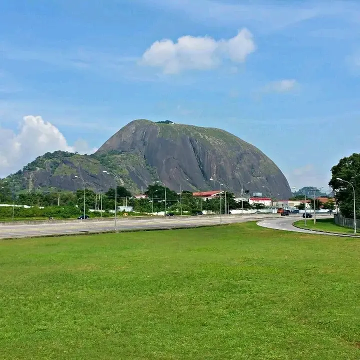
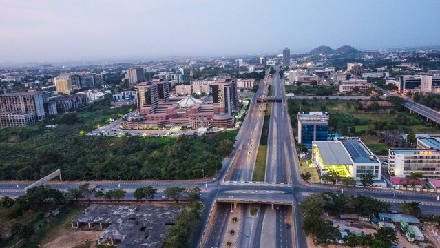
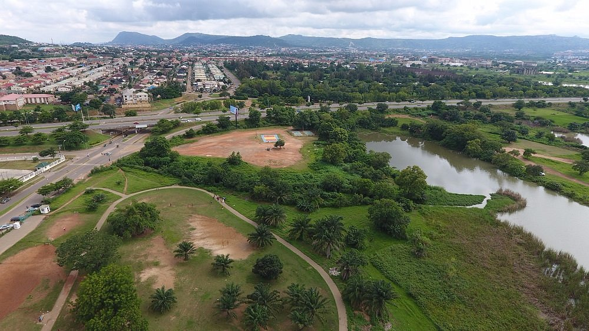
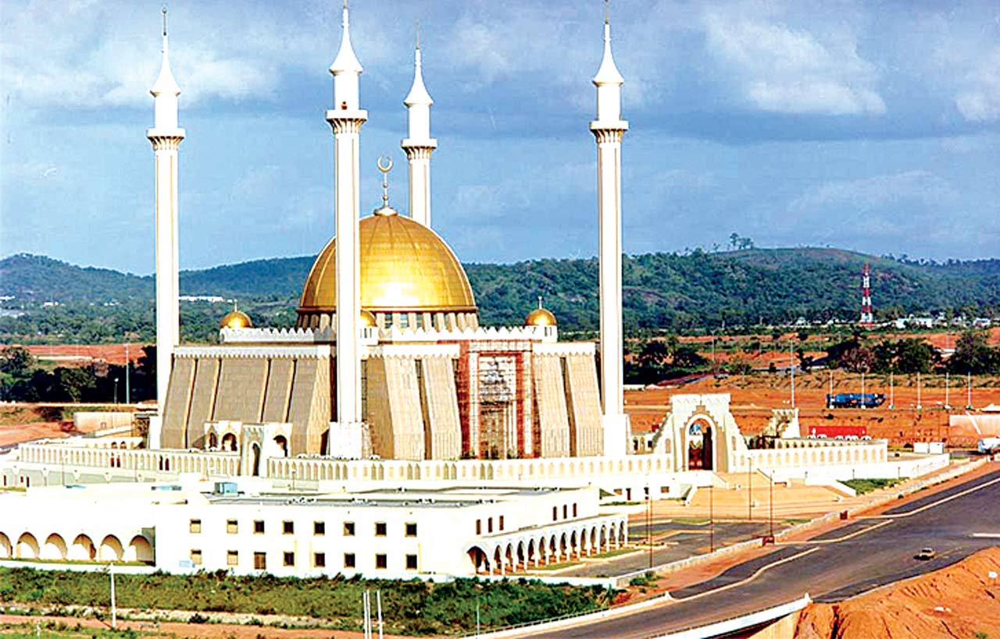

Aso Rock is one of Abuja’s most recognized landmarks.

Central business areas support finance, services, and trade.

Jabi Lake provides leisure and tourism opportunities.

Abuja has important cultural and religious landmarks.